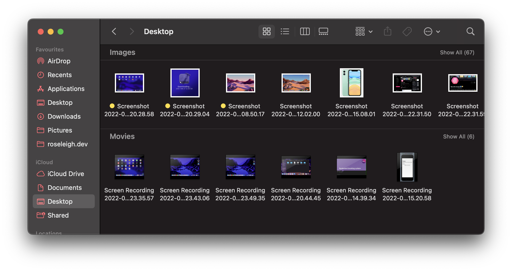

1.2.2 - Applications Generation
| Specification |
| 1.2.2 - Applications Generation |
- The nature of applications, justifying suitable applications for a specific purpose
- Utilities
- Open source vs closed source
- Translators: Interpreters, compilers and assemblers.
- Stages of compilation (lexical analysis, syntax analysis, code generation and optimisation)
- Linkers and loaders and use of libraries.
|
What is software?
Software can mostly be classed into these categories:
- Systems Software: the software needed to run the computer itself as well as its programs. This generally includes the OS, utility software, libraries, and translators.
- Applications Software: this is software used to carry out a task for the user. This could include writing letters or keeping accounts - this is a task that would be carried out even without a computer.
- General-purpose software: this could include software such as an office suite or graphics suite. This software could be used for many different purposes.
- Special-purpose software: this is software that is designed to perform a single task (or a specific set of them). This could include payroll software, web browsers, music players, etc.
Utility software

macOS finder, an example of a file manager. This would class as a utility.
- This is software that performs a specific task, typically related to system maintenance.
- Examples of utility software are disk defragmenters, file managers, device drivers, system clean-up software, and many more.
- Disk defragmentation: systems with defragmented HDDs will slow down over time due to needing to spend time finding parts of files. Defragmentation software rearranges files to be stored contiguously, meaning they are next to each other.
- File managers: this form of softwrae is used to manage, organise, delete, sort, move, copy and and create files and folders. Examples of file managers include Finder on macOS and File Explorer on Windows.
Open source vs closed source software
Open source
Open source software is software governed by the Open Source Initiative. This means that:
- The source code of the software is freely available to be amended, forked or examined by others.
- People have the ability to tailor the software to their individual needs.
- The code is open for bugs and security holes to be spotted and fixed.
- A company would base their software on open source as a lot of the core functionality is already available.
- This means that they can just add the amendments and additions specific to their needs, saving time and money.
Closed source/proprietary software
- This is software sold in the form of a license to use it.
- There are restrictions placed on how the software can be used - for example 5 computers within a household can use a copy of Microsoft Office.
- The creator holds copyright over the software. This means that the users can't access the source code or modify the package and sell it to others. This would be in breach of the Copyright Act.
Off-the-shelf vs Bespoke software
Off-the-shelf
- This software is ready to use immediately and anyone can purchase this software.
- Pros: It's less expensive to use off the shelf software since the cost is spread among different users.The software will be installable from the get-go, and it is usually well documented, well tested and error free.
- Cons: There is a limited competitive advantage for businesses using it however, and it may contain a lot of unwanted features while missing desired ones.
Bespoke software
- This is software that is written by a team of programmers for a particular organisation.
- Pros: The features will be customised to user requirements, and as needs change, other features can be added. There's also the potential for the software to give a competitive business advantage over rivals.
- Cons: It will cost a large amount of money and time to develop this software. This help will also not be easily available due to the lack of a user community, and it may contain errors which do not surface immediately.
Translators
- Translators are usually included within development software, and used to convert source code into executable machine code.
- There are three main types of translators: assemblers, interpreters and compilers.
Assemblers
- An assembler translates assembly language code into machine code.
- Assembly code is a low-level language written in mnemonics designed to closely reflect the CPU's operations.
- The machine code instructions a specific computer can execute are dependent on its hardware. This means that each different type of processor will have a different instruction set and a different assembly code.
- It usually requires several lines of low-level code to acheive the same result as a single level of high-level code.
Compilers
- Compilers are programs which translate high-level languages such as C# or Python into machine code.
- The source code, written by the programmer, is input as data into the compiler. The compiler will scan through it several times, each time performing different checks and building up tables of information needed to produce the final machine code.
- Different compilers will be needed for different hardware platforms as they are machine dependent.
- Compiled programs will run quicker than assembled or translated code.
Interpreters
- Interpreters are fundamentally different to compilers and assemblers.
- Once the programmer has written, saved, and ran the program, the interpreter looks at it line-by-line and analyses it to see if there are any syntax errors. If there aren't, it will translate the code into machine code and run it.
- This enables platform independence, as the source code can be run on any machine which has the appropriate interpreter available.
- It does, however, result in slower proceessing times since it needs to translate each statement to machine code each time it is encountered.
Stages of compilation
Lexical Analysis
- This is where all comments and white space are removed, and variable names are stored in the symbol table which also holds data such as the scope and the data type of variables.
- The code is then converted into a series of tokens, which is linked to the by-this-point partially completed token table.
- Some simple error checking is then performed, such as the check for illegal identifiers and the lexical analyser will detect any attempt to assign a constant to illegal values.
Syntax Analysis
- This is where output is recieved from the lexcial analysis, and the code is checked to ensure it follows the rules (read: grammar) of the language. For context: computer languages are similar to spoken languages in that they have a specific structure that needs to be followed.
- Syntax analysis is neccesary to ensure the code is valid and meets the language's structural rules.
- Where the code breaks the rules of the language, a list of errors is generated. Otherwise, it's passed on to the next stage.
Code generation
- This is where the object code is created. This stage is neccesary to turn the code into a format that the processor can understand (read: machine code).
- The code may be inneficient as it may contain unnecessary instructions or groups of instructions that can be replaced by simpler ones. This is where the next stage comes in...
Code optimisation
- This is where the compiler will aim to reduce execution time of the object program.
- A program may be optimsed so that it becomes a smaller size, runs more efficiently, runs quicker or performs fewer I/O operations.
Libraries & Linkers
Libraries
- Library programs are ready-made programs, grouped in software libraries, which can be loaded and ran when needed.
- An example of a library format are .dll files in Windows.
- Libraries can be imported into a program in order to make code more efficient and to save the programmer time in trying to write the code themselves.
Linkers
- Linkers are used to combine and link all of the object modules to generate a single executable file for the source program.
- Linkers are needed to make sure the relevant code is included with the final executable - this is because the user running a program might not have the library installed on their computer.